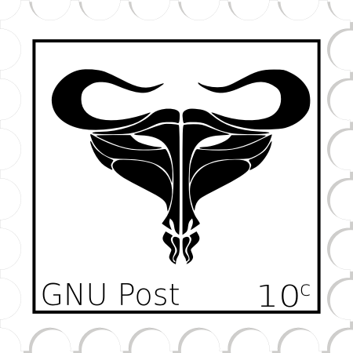
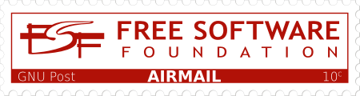
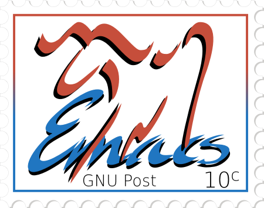
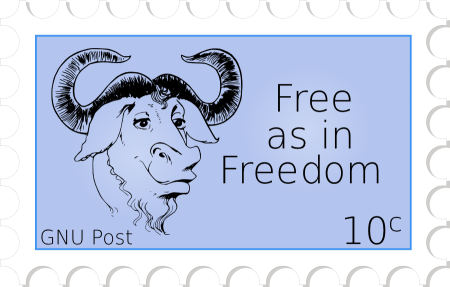
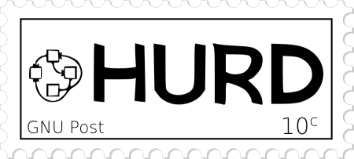
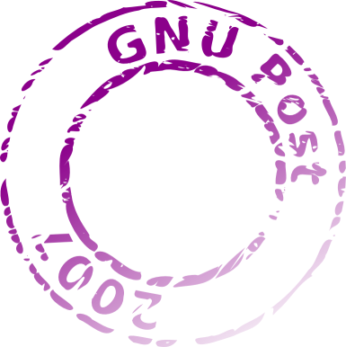
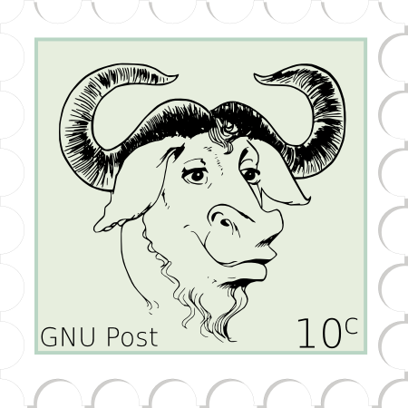
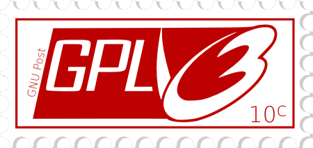
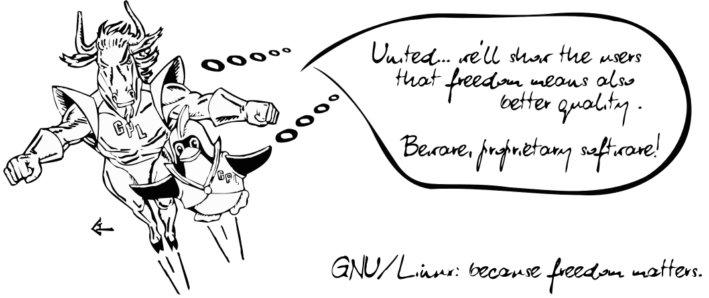
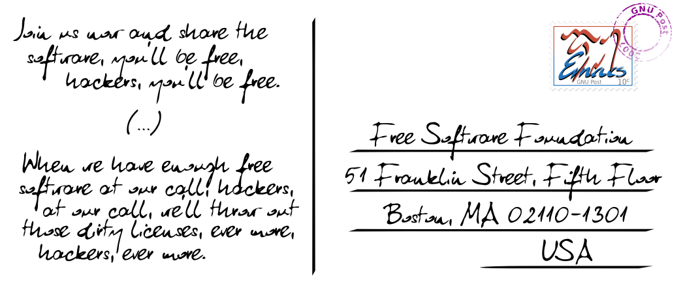

GNU-Briefmarken (Tomasz W. Kozłowski)
Hier sind einige nette Post Bilder von Tomasz W. Kozłowski.
Alternative GNU-Briefmarke als PNG- und SVG-Datei.

FSF Airmail als PNG-
und SVG-Datei.

GNU Emacs-Briefmarke als PNG- und SVG-Datei

Free as in Freedom als PNG- und SVG-Datei)

GNU Hurd-Briefmarke als PNG- und SVG-Datei.

GNU-Postsendung 2007 als PNG- SVG-Datei

GNU-Briefmarke als PNG- und SVG-Datei

GPLv3-Briefmarke als PNG- und SVG-Datei

GNU-Postkarte (Vorderseite) als PNG-Datei 1069 × 450 Pixel und 2138 × 900 Pixel und als
SVG-Datei

GNU-Postkarte (Rückseite) als PNG-Datei 1069 × 450 Pixel und 2138 × 900 Pixel und SVG-Datei

Lizenzierung
- Alternative GNU-Briefmarke von Tomasz W. Kozłowski ist unter der
Lizenz CC BY-ND 3.0 US
verfügbar (basiert auf Alternative
GNU Head).
- FSF Airmail von Tomasz W. Kozłowski ist unter der GNU GPLv2 oder einer neueren
Version verfügbar (basiert auf dam offiziellen Logo der Free Software Foundation von Li Jiang).
- GNU Emacs-Briefmarke von Tomasz W. Kozłowski und die Vektorgrafik
(bereitgestellt von Dmitry Dzhus) von ist unter der GNU GPLv2 oder einer neueren
Version verfügbar (basiert auf dem Original-GNU Emacs-Logo von Luis
Fernandes).
- Free as in Freedom von Tomasz W. Kozłowski ist unter der GNU GPLv2 verfügbar (basiert auf
dam offiziellen GNUkopf-Logo von Etienne
Suvasa (die Version mit 1200 × 1200 Pixeln wurde von Peter Gerwinski
bereitgestellt).
- GNU Hurd-Briefmarke von Tomasz W. Kozłowski ist „Freely
Redistributable“ (basiert auf dem ursprünglichen Hurd Metafont-Logo von Stephen McCamant).
- GNU Postsendung 2007 von Tomasz W. Kozlowski ist in die Public
Domain entlassen.
- GNU stamp ist unter der GNU
GPLv2 verfügbar.
- GPLv3-Briefmarke ist unter der Lizenz CC BY-SA 3.0
oder neuer verfügbar (basiert auf der originalen GPLv3-Grafik)
- GNU.Postkarte (Vorderseite) ist unter der Free Art License 1.3 verfügbar
(basiert auf der Vektorgrafik-Version von Dynamisches Duo: GNU und der
Pinguin im Flug von Victor Siame).
- GNU.Postkarte (Rückseite) von Tomasz W. Kozłowski ist unter der GNU GPLv2 oder neuer verfügbar
(basiert auf dem GNU Emacs-Logo).
{kind=link}
{kind=link}
{kind=link}
{kind=link}
{kind=link}
{kind=link}
{kind=link}
{kind=link}
{kind=link}
{kind=link}
{kind=link}
{kind=link}
{kind=link}
{kind=link}
{kind=link}
{kind=link}
{kind=link}
{kind=link}
{kind=link}
{kind=link}
{kind=link}
{kind=link}